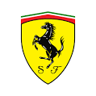

ASTON MARTIN ARAMCO COGNIZANT FORMULA ONE TEAM
Aston Martin es un fabricante de coches británico que ha participado en la Fórmula 1 de diversas maneras. La compañía participó por primera vez durante la temporada 1959 con el monoplaza DBR4, usando su propio motor, pero sin obtener puntos. Continuaron con malos resultados en la temporada 1960 nuevamente sin obtener puntos. Como resultado, Aston Martin decidió abandonar la Fórmula 1.
Un cambio de marca del Racing Point F1 Team resultó en el regreso a la Fórmula 1 como Aston Martin en 2021, utilizando motores de Mercedes. La escudería, propiedad de Lawrence Stroll, tiene a Fernando Alonso y Lance Stroll como sus pilotos de carreras en la temporada 2023 con el monoplaza AMR23. La escudería tiene sede en Silverstone.
Seguir leyendo...RED BULL RACING HONDA RBPT
Red Bull Racing es una escudería austriaca de Fórmula 1 con base en Milton Keynes, Inglaterra, propiedad de la empresa de la bebida energizante Red Bull GmbH. La compañía adquirió la escudería Jaguar Racing por cerca de US$110 000 000, cuando la propietaria anterior de este equipo Ford Motor Company, anunció su retirada de la máxima categoría del automovilismo. Red Bull también tiene otro equipo subsidiario de Fórmula 1, llamado Scuderia AlphaTauri, conocida hasta 2019 como Scuderia Toro Rosso, con sede central en Faenza (Italia) desde la cual los jóvenes pilotos dan posteriormente el salto al primer equipo. Compite desde 2005 y en sus dos primeras temporadas participaba con licencia británica.
Si bien la escudería debe su nombre a la empresa de bebidas, la cual además de su propietaria es a su vez su principal patrocinador, la denominación comercial del equipo ha recibido modificaciones en distintas temporadas, en el que incorporaron a la misma el nombre de distintos patrocinadores notables que han logrado cerrar acuerdo con la escudería. Cuenta en su palmarés con siete Mundiales de Pilotos: cuatro de Sebastian Vettel, tres de Max Verstappen; y seis Mundiales de Constructores.
SCUDERIA FERRARI
Scuderia Ferrari es la división deportiva de automóviles Ferrari encargada de las competiciones de Fórmula 1. Es la escudería más longeva y el equipo en activo más antiguo de la categoría, el más exitoso y el que ha conseguido más victorias, campeonatos de pilotos y campeonatos de constructores.
La primera participación de Ferrari en Fórmula 1 fue en el Gran Premio de Mónaco de 1950, con el Tipo 125 F1. Ferrari es considerado uno de los cuatro grandes equipos de Fórmula 1, junto con Williams, McLaren y Mercedes. Ha contado con muchos de los pilotos más destacados de la historia de la Fórmula 1 como Michael Schumacher, Niki Lauda, Juan Manuel Fangio, Alberto Ascari, Alain Prost, Nigel Mansell, Carlos Reutemann, Gilles Villeneuve, Kimi Räikkönen, Sebastian Vettel y Fernando Alonso, entre otros. Los pilotos actuales son Charles Leclerc y Carlos Sainz Jr.
En sport prototipos y gran turismos, Ferrari ha obtenido nueve victorias absolutas en las 24 Horas de Le Mans, ocho en la Mille Miglia y siete en la Targa Florio; además conquistó once títulos de constructores en el Campeonato Mundial de Resistencia.
MERCEDES-AMG PETRONAS MOTORSPORT
Mercedes-Benz es una de las automotrices más exitosas de la Fórmula 1, considerada uno de los cuatro equipos con mejores resultados, junto con Williams, Ferrari y McLaren. Participó inicialmente como constructor en Fórmula 1 en 1954 y 1955, y volvió a hacerlo desde 2010 hasta la actualidad. El equipo alemán ganó ocho Campeonatos de Constructores de forma consecutiva (de 2014 a 2021). Es la tercera escudería que posee más Campeonatos de Pilotos, con 9; ganados por Lewis Hamilton, Juan Manuel Fangio y Nico Rosberg. También es el tercer equipo en la historia con más victorias y poles en todos los ítems anteriores, solamente por detrás de Ferrari y McLaren.
El chasis y motor son construidos por Mercedes-Benz. Mercedes-Benz Group es la empresa propietaria de la escudería. Su director actual es Toto Wolff y sus pilotos son Lewis Hamilton y George Russell.
Además, la marca ha sido fabricante de motores para otras escuderías, teniendo sus mayores éxitos con McLaren a finales de los 90 y en los años 2000. Como proveedora de motores, actualmente abastece a las escuderías Aston Martin, McLaren y Williams.
BWT APINE F1 TEAM

Alpine F1 Team (por motivos de patrocinio BWT Alpine F1 Team), es una escudería francesa de Fórmula 1 con sede en Reino Unido y propiedad del Grupo Renault, que hizo su debut en la temporada 2021. Reemplazó a Renault para promocionar la gama deportiva de vehículos Automobiles Alpine.
Alpine fabricó dos monovolúmenes Fórmula 1 con anterioridad: en los años sesenta el A350 y en los setenta el A500, pero jamás compitieron. Este último fue usado para las pruebas previas al ingreso de Renault a la F1 con su revolucionario monoplaza de motor turbo.
En septiembre de 2020, Renault eligió usar el nombre «Alpine» para promocionar la empresa hermana de la marca francesa llamada Automobiles Alpine mediante la compra de los derechos de nombre de Renault convirtiéndose en «Alpine F1 Team», poniendo fin después de cinco años a «Renault F1 Team».
MCLAREN F1 TEAM
McLaren Racing Limited, conocida comúnmente como McLaren, es una escudería británica de automovilismo con sede en Woking (Surrey, Inglaterra). Fue fundada en 1963 por el piloto neozelandés Bruce McLaren, en sociedad con los estadounidenses Teddy Mayer y Tyler Alexander. Es considerado uno de los cuatro grandes equipos de Fórmula 1, junto con Williams, Ferrari y Mercedes. A lo largo de los años ha obtenido 8 Campeonatos de Constructores, 12 Campeonatos de Pilotos, 183 victorias, 155 poles y 489 podios.
En su rol de constructor, McLaren también ha desarrollado automóviles de carreras para diversos campeonatos. El equipo oficial de McLaren dominó la Can-Am entre 1967 y 1971. Los monoplazas de McLaren también obtuvieron tres victorias en las 500 Millas de Indianápolis de 1972, 1974 y 1976, dos de ellas con el equipo oficial. El equipo forma parte del Grupo McLaren, fundado en 1989, que posee divisiones de tecnologías aplicadas, electrónica y otros rubros.
ALFA ROMEO F1 TEAM
Alfa Romeo ha participado como una escudería de Fórmula 1 en diferentes periodos. Antes de su retorno como equipo constructor en 2019, tras renombrar la estructura de Sauber y asumir la licencia suiza, participó en los campeonatos de las temporadas 1950, 1951 y entre 1979 y 1985 como escudería italiana. Sus éxitos se dieron principalmente antes del establecimiento del Campeonato del Mundo y en los dos primeros años de este, no consiguiendo en su vuelta reverdecer los laureles. Ya en los años 1920, algunos Alfa Romeo competían en los circuitos europeos y bien pronto se constituyó un equipo oficial de la marca dirigido por el propio Nicola Romeo, en el que corrieron grandes pilotos de la época como Giuseppe Campari, Antonio Ascari o Enzo Ferrari.
Para la temporada 2022, el equipo renovó su plantilla de pilotos. Valtteri Bottas y Guanyu Zhou fueron sus nuevos pilotos. Por otro lado, Räikkönen se retiró de la categoría, y Giovinazzi pasó a la Fórmula E.
En la temporada 2023, el equipo seguirá contando con los dos pilotos. Además, el 27 de enero de 2023 anunció a Stake, empresa relacionada con la industria del juego en línea, como nuevo patrocinador principal del equipo, pasando a llamarse Alfa Romeo F1 Team Stake.
MONEY GRAM HASS F1 TEAM
Haas F1 Team, anteriormente conocido bajo el nombre de Haas Racing Developments y actualmente como MoneyGram Haas F1 Team por razones de patrocinio, es un equipo estadounidense de carreras de Fórmula 1 construido por el empresario y copropietario del equipo Stewart-Haas Racing de la NASCAR Sprint Cup Series, Gene Haas, tras tener la propuesta de Guenther Steiner y que fue fundado y aprobada su entrada por la comisión de la FIA y por Bernie Ecclestone en el mes de abril de 2014. El equipo debutó en la temporada 2016.
Haas tiene su sede en Kannapolis, Carolina del Norte, junto a las instalaciones del equipo filial de la NASCAR Cup Series, el Stewart-Haas Racing.
SCUDERIA ALPHA TAURI
Scuderia AlphaTauri, más conocida simplemente como AlphaTauri, es una escudería italiana de Fórmula 1, propiedad de la empresa Red Bull. El constructor fue renombrado para el año 2020 de Toro Rosso a AlphaTauri para promocionar a la empresa de ropa del mismo nombre.
En 2005, la empresa Red Bull GmbH creó la Scuderia Toro Rosso tras la compra de Minardi F1 Team a Paul Stoddart. Toro Rosso largó 268 carreras, logrando una única victoria en el Gran Premio de Italia de 2008 de la mano del futuro campeón de Fórmula 1 Sebastian Vettel. El equipo tuvo que esperar 11 años para volver al podio, logrados en el Gran Premio de Alemania y Brasil de 2019 con Daniil Kvyat y Pierre Gasly respectivamente.
En 2023, el equipo dio la bienvenida a Nyck de Vries, en detrimento de Pierre Gasly, que partía a Alpine. Tras 10 carreras donde el rendimiento de Nyck no conformó, la escudería, previo al Gran Premio de Hungría, anunció que Daniel Ricciardo, expiloto de McLaren en 2022 y tercer piloto de Red Bull Racing, tomará su lugar. En este momento, el equipo se ubica último en el campeonato de constructores con solamente cinco puntos.
WILLIAMS RACING
Williams Grand Prix Engineering Limited, comúnmente conocido como Williams Racing, es un equipo de Fórmula 1 creado en 1977 por Frank Williams y Patrick Head.
Williams es considerado uno de los cuatro grandes equipos de Fórmula 1, junto con Ferrari, McLaren y Mercedes. La primera carrera de la escudería fue en el Gran Premio de España de 1977, cuando el equipo corrió con un chasis March y Patrick Nève como piloto. Williams comenzó a construir sus propios autos el año siguiente. El suizo Clay Regazzoni ganó la primera carrera para el equipo en el Gran Premio de Gran Bretaña de 1979, mientras que en el Gran Premio de Gran Bretaña de 1997, el canadiense Jacques Villeneuve ganó la carrera número 100 para el equipo. De esta manera, Williams se convirtió en uno de los únicos tres equipos en Fórmula 1, junto con Ferrari y el también inglés McLaren, en ganar 100 carreras.